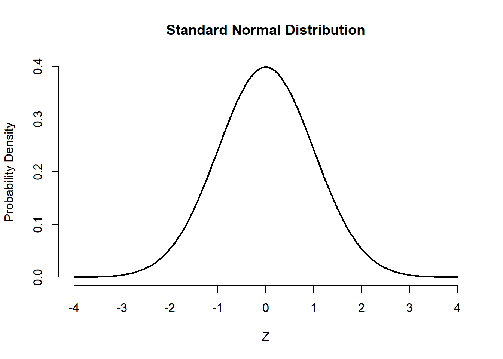

3 Probability Distributions - Normal distribution
3.1 Sample Space and Random Events
In nature, people often encounter two types of phenomena:
One is the deterministic phenomenon, which is characterized by conditions under which the result is completely predictable, that is, the same result is observed each time the experiment is conducted. For example, water at 100°C under standard atmospheric pressure inevitably boils.
The other is the random phenomenon, which is characterized by conditions under which the result cannot be determined with certainty before it occurs, that is, one of several possible outcomes is observed each time the experiment is conducted. For example, when a coin is tossed, the outcome is either heads H or tails T, but unknown before the coin is tossed. Die rolling is also a random phenomenon, whose outcome is an integer from 1 to 6, unknown before the die is rolled. Likewise, for a bi-allelic gene A, the possible alleles are A and a, and the possible corresponding genotypes are AA, Aa, and aa.
The process of obtaining an observation or making a measurement for a random phenomenon/process is called a random experiment (briefly, an experiment), and is denoted by E.
The sample space Ω is defined as the set of all possible outcomes of the experiment. In the case of the roll of a die, the sample space can be written as the set of the six possible outcomes, Ω = {1, 2, 3, 4, 5, 6}.
Different experiments will have different sample spaces that can be written in an equivalent way (flipping a coin: Ω ={H, T}, flipping two coins: Ω ={HH, HT, TH, TT}, testing for possible genotypes of a bi-allelic gene A: Ω ={AA, Aa, aa}).
A random event A, or event A for short, is a sub-set of Ω, A ⊂ Ω, and it represents a number of possible outcomes for the experiment. In the case of the roll of a die, the event “even number” may be represented by A = {2, 4, 6}, and the event “odd number” as B = {1, 3, 5}. In the case of flipping two coins, an event could be that exactly one of the coins lands Heads, A = {HT, TH}.
Basic types and operations of events using set theory
Simple and Compound Events
If an event consists of a single outcome from the sample space, it is termed a simple event. The event of getting less than 2 on rolling a fair die, denoted as A = {1}, is an example of a simple event.
If an event consists of more than a single outcome from the sample space, it is called a compound event. An example of a compound event in probability is rolling a fair die and getting an odd number, A = {1, 3, 5}.
Union of Events The union symbol (∪) is used to denote the OR event.
For any two events A and B, “at least one of A and B occurs” is also an event. This event is called the union of A and B, and is denoted by A∪ B, which includes only A occurring, only B occurring, and A and B occurring simultaneously.
In the experiment of rolling a single die, find the union of the events A : “the number rolled is even” and B : “the number rolled is greater than two.” Since the outcomes that are in either A={2,4,6} or B={3,4,5,6} (or both) are 2,3,4,5, and 6, that means A ∪ B={2,3,4,5,6} .
Intersection of Events The intersection symbol (∩) is used to denote the AND event.
For any two events A and B, “A and B occur simultaneously” is also an event. This event is called the intersection of A and B, and is denoted by A ∩ B.
For example, A = {1, 2, 3, 4}, B = {2, 3, 5, 6} then A ∩ B = {2, 3}.
Inverse Events
For any event A, “event A does not occur” is also an event. This event is called the inverse of event A or the complement of A, and is denoted by \(\bar{A}\).
Mutually Exclusive Events
For any two events A and B, if events A and B cannot occur simultaneously, that is, A ∩ B =∅, then A and B are called mutually exclusive events.
3.2 Probability
The concept of probability is used in day-to-day life which stands for the probability of occurring or non-occurring of events.
The first step towards determining the probability of an event is to establish a number of basic rules that capture the meaning of probability. The probability of an event is required to satisfy three axioms defined by Kolmogorov:
Example - Mutually exclusive with dice
Suppose we throw a six-die what is the probability of rolling either 5 or 6?
The probability of rolling a 6 is 1/6 and the probability of a 5 is also 1/6. We cannot take a 5 and 6 at the same time (these events are mutually exclusive) so:
P(rolling a 5 or 6) = P(rolling a 5) + P(rolling a 6) = 1/6 + 1/6 = 1/3
These axioms should be regarded as the basic “ground rules” of the theory of probability, but they provide no guidance on how event probabilities should be assigned. For this purpose, there are two major avenues available. One is based on the repetition of the experiments a large number of times under the same conditions, and goes under the name of the frequentist approach. The other is based on a more theoretical knowledge of the experiment, but without the experimental requirement of a large number of repetitions, and is referred to as the Bayesian approach.
Definition of Probability
A. Frequentist approach
Consider performing an experiment a large number N of times, under the same experimental conditions. The occurrence of the event A is indicated as the number N(A). The probability of event A is given by:
\[ P(A) = \lim_{N\to\infty} \frac{N(A)}{N} \tag{3.1}\]
that is, the probability is the relative frequency of occurrence of a given event from many repetitions of the same experiment.
The obvious limitation of this definition is the need to perform the experiment a large number of times. This requirement is not only time consuming but also requires that the experiment be repeatable in the first place, which may or may not be possible. The limitation of this method is evident by considering a coin toss: no matter the number of tosses, the occurrence of heads up will never be exactly 50%, which is what one would expect based on an empirical knowledge of the experiment at hand Figure 3.1.
Therefore, we may say that the probability of an event is the relative frequency of this set of outcomes over an indefinitely large number of experiments.
\[ P(A) \approx \frac{number\ of\ times \ A\ occured}{total\ number\ of\ experiments} \tag{3.2}\]
B. Bayesian approach
Another method to assign probabilities is to use knowledge of the experiment, both theoretical and experimental, but without the need for extensive experimental data. The probability assigned to an event represents the degree of belief that the event will occur in a given try of the experiment, and it implies an element of subjectivity which will become more evident with Bayes’ theorem.
In this textbook, we’ll focus on “Frequentist” approach of probability.
Fundamental Properties of Probability
The following properties are useful to assign and manipulate event probabilities.
The Conditional Probability
The conditional probability is indicated as P(A|B) or A given B. The following relationship defines the conditional probability:
\[P(A ∩ B) = P(A|B) · P(B) \tag{3.5}\]
or
\[ P(A|B)= \frac{P(A ∩ B)}{P(B)} \tag{3.6}\]
Example - Conditional probability with dice
Calculate the probability of obtaining 8 as the sum of two rolls of a die, given that the first roll was a 3.
The sample space of the experement consists of all ordered pairs of numbers from 1 to 6. That is, S = {(1, 1), (1, 2),… , (1, 6), (2, 1),… , (6, 6)}.
It is useful to define the following two events:
A = {The sum of two rolls is 8}.
B = {The first roll shows 3, and the second any number}.
Event A is given by outcomes A={(2,6), (3,5), (4,4), (5,3), (6,2)} :
| 1st roll | 2 | 3 | 4 | 5 | 6 |
| 2nd roll | 6 | 5 | 4 | 3 | 2 |
| Sum | 8 | 8 | 8 | 8 | 8 |
and since each combination has a probability of 1/36, P(A) = 5/36.
Event B is given by outcomes B={(3,1), (3,2), (3,3), (3,4), (3,5), (3, 6)}. The probability of event B is P(B) = 6/36 = 1/6.
Also, the event A ∩ B occurs if the first roll is a 3 and the sum is 8, which can clearly occur only if a sequence of (3,5) takes place, thus with probability P(A ∩ B) = 1/36.
According to the definition of conditional probability Equation 3.6, the probability of interest is:
\(P(A|B) = \frac{P(A ∩ B)}{P(B)} = \frac{1/36}{1/6} = \frac{1}{6}\)
Therefore, the occurrence of 3 in the first roll has increased the probability of A from P(A) = 5/36 to P(A|B) = 1/6.
Statistical Independence
The concept of statistical independence among events means that the occurrence of one event has no influence on the occurrence of other events. Consider, for example, rolling two dice, one after the other: the outcome of one die is independent of the other and the two tosses are said to be statistically independent.
On the other hand, consider rolling two dice, and being interested in the following pair of events: the first is the outcome of the roll of die 1 and the second is the sum the rolls of die 1 and die 2. It is clear that the outcome of the second event—e.g., the sum of both dice—depends on the first toss and the two events are not independent.
Two events A and B are said to be statistically independent if:
\[P(A ∩ B) = P(A) · P(B) \tag{3.7}\]
Equation 3.7, known as Multiplication Rule of Probability, follows directly from Equation 3.5. In fact, if A and B are statistically independent, then the conditional probability is P(A|B) = P(A), i.e., the occurrence of B has no influence on the occurrence of A.
Example - Statistical independence with dice
Determine the probability of obtaining two 3s when rolling two dice. This event can be decomposed in two events:
A = {die 1 shows 3, and die 2 shows any number},
B = {die 2 shows 3, and die 1 shows any number}.
It is natural to assume that P(A) = 1/6, P(B) = 1/6, and state that the two events A and B are independent by nature, since each event involves a different die, which has no knowledge of the outcome of the other one; the same would be true also of the same die tossed two times. The event of interest is A ∩ B, and the definition of probability of two statistically independent events leads to \(P(A ∩ B) = P(A) · P(B) = 1/36\).
This result can be confirmed by a direct count of all possible outcomes in the toss of two dice, and the fact that there is only one combination out of 36 that gives rise to two consecutive 3s.
Bayes’ theorem
The Bayes’ theorem can be written as:
\[P(A|B) = \frac{P(B|A)· P(A)}{P(B)} \tag{3.8}\]
where A and B are events and \(P(B)\neq 0\).
Probabilities involved in Bayes’ theorem (Advanced)
The experiment B can be considered as the data collected in a given experiment. The event A is a model that is used to describe the data.
Accordingly, the probabilities involved in Bayes’ theorem can be interpreted as follows:
P(B|A) is the probability, or likelihood L, of the data given the specified model. Notice how P(B|A) means that the model A is given, or known.
P(A) is the probability of the model A, without any knowledge of the data.This term is interpreted as a prior probability, or the degree of belief that the model is true before the measurements are made.
P(B) is the probability of collecting the dataset B.
Finally, P(A|B) is the posterior probability of the model after the data have been collected.The posterior probability is the ultimate goal of the analysis since it describes the probability of the model based on the collection of data.
This interpretation of Bayes’ theorem is the foundation of Bayesian statistics, and it can be summarized as:
Posterior probability ∝ Likelihood × Prior probability
Bayes’ theorem provides a way to update the prior knowledge of model parameters given the measurements, leading to posterior estimates of parameters. One key feature of Bayesian statistics is that the calculation of probability is based on a prior probability, which may rely on a subjective interpretation of what is known about the experiment before any measurements are made. Therefore, great attention must be paid to the assignment of prior probabilities and the effect of priors on the final results of the analysis.
3.3 Random Variables
Formally, a random variable X assigns a numerical value to each possible outcome of a random phenomenon. For instance, we can define X based on possible genotypes of a bi-allelic gene A as follows:
\[X={\begin{cases}0,&for\ genotype\ AA\\1,&for\ genotype\ Aa\\2,&for\ genotype\ aa\end{cases}}\]
In this case, the random variable assigns 0 to the outcome AA, 1 to the outcome Aa, and 2 to the outcome aa.
The set of values that a random variable can assume is called its range. For the above example, the range of X is {0, 1, 2}.
After we define a random variable, we can find the probability for its possible value based on the underlying random phenomenon. This way, instead of talking about the probability for different outcomes and events, we can talk about the probability of different values for a random variable.
Assume that the individual probabilities for different genotypes are P(AA) = 0.49, P(Aa) = 0.42, and P(aa) = 0.09. Then, instead of saying P(AA) = 0.49, i.e., the genotype is AA with probability 0.49, we can say that P(X = 0) = 0.49, i.e., X is equal to 0 with probability of 0.49. Likewise, P(X = 1) = 0.42 and P(X = 2) = 0.09.
Note that the total probability for the random variable is still 1. In what follows, we write P(X) to denote the probability of a random variable X in general without specifying any value or range of values. The probability rules we discussed earlier also apply to random variables. Specifically, concepts such as independence and conditional probability are defined similarly for random variables as they are defined for random events. For example, when two random variables do not affect each other’s probabilities, we say that they are independent.
A random variable is also expected to have a theoretical distribution, e.g., Normal, Poisson, etc., according to the nature of the variable itself and the method of measurement.
Each distribution is entirely defined by several specific parameters. The parameter values determine the location and shape of the curve on the plot of distribution, and each unique combination of parameter values produces a unique distribution curve.
For the random variable X defined based on genotypes, the probability distribution can be simply specified as follows:
\[P(X=x)={\begin{cases}0.49,&for\ x=0\\0.42,&for\ x=1\\0.09,&for\ x=2\end{cases}}\] Here, x denotes a specific value (i.e., 0, 1, or 2) of the random variable. Probability distributions are specified differently for different types of random variables. In the following, we divide the random variables into two major groups: discrete and continuous. Then, we provide several examples for each group.
3.4 Probability distributions for Discrete Outcomes
For discrete random variables, the probability distribution is fully defined by the probability mass function (pmf). This is a function that specifies the probability of each possible value within range of random variable.
Bernoulli distribution
Binary random variables are abundant in scientific studies. Bernoulli distribution applies to events that have one trial and two possible outcomes.
A Bernoulli event is one for which the probability the event occurs (success; X=1) is p and the probability the event does not occur (failure; X=0) is 1-p. As before, the probability for all possible values is one: P(X = 0) + P(X = 1) = 1.
A Bernoulli trial is an instantiation of a Bernoulli event. So long as the probability of success or failure remains the same from trial to trial (i.e., each trial is independent of the others), a sequence of Bernoulli trials is called a Bernoulli process.
Binomial distribution
The binomial distribution is an important theoretical distribution with wide applications in biomedicine. Many biological phenomena can be described using a binomial distribution.
The Bernoulli distribution represents the success or failure of a single Bernoulli trial. The Binomial Distribution represents the number of successes and failures in \(n\) independent Bernoulli trials for some given value of n.
Poisson distribution
So far, we have discussed the Bernoulli distribution for binary variables, and the binomial distribution for the number of times the outcome of interest (one of the two possible categories of the binary variable) occur within a set of n Bernoulli trials.
While a random variable with a Binomial distribution is a count variable (e.g., number of people survived), its range is restricted to include integers from 0 through n only. For example, the number of survivals in a group of n = 50 cancer patients cannot exceed 50.
Now, suppose that we are investigating the number of physician visits for each person in one year. Although very large numbers such as 100 are quite unlikely, there is no theoretical and prespecified upper limit to this random variable. Theoretically, its range is the set of all nonnegative integers.
3.5 Probability distributions for Continuous Outcomes
For discrete random variables, the pmf provides the probability of each possible value. For continuous random variables, the number of possible values is uncountable, and the probability of any specific value is zero.
Therefore, instead of talking about the probability of any specific value x for continuous random variable X, we talk about the probability that the value of the random variable is within a specific interval from x1 to x2; we show this probability as P(x1 ≤ X ≤ x2).
\[ P(x_1\leq X \leq x_2)=\int_{x_1}^{x_2}f(x)dx \tag{3.18}\]
where f(x) is the probability density functions (pdf) of X .
Clearly, in Equation 3.18, the probability of a certain point value in X is zero, and the area under the probability density curve of the interval (−∞, +∞) should be 1.
Normal Distribution
There are several important probability distributions in statistics. However, the normal distribution might be the most important. First, Galileo informally described a normal distribution in 1632 when discussing the random errors from observations of celestial phenomena. However, Galileo existed before the time of differential equations and derivatives. We owe its formalization to Carl Friedrich Gauss, which is why the normal distribution is often called a Gaussian distribution. A very familiar example is the height for adult people that approximates a normal distribution very well.
The normal distribution provides an adequate model for the relative frequency distributions of data (empirical distributions) collected from many different biomedical areas, such as adult height, weight, vital capacity, and red blood cell count. Moreover, many other distributions that are not normal themselves can be made approximately normal by transforming the data into a different scale.
If the shape of empirical distributions of random variables approximates the Gaussian distribution then the variables are considered to be distributed normally.
Standard Normal distribution
If the random variable X has a normal distribution with \(\mu\) and standard deviation \(\sigma\), then the standardized Normal deviate is:
\[ z= \frac{x-\mu}{\sigma} \tag{3.20}\]
The z is a random variable that has a Standard Normal distribution, also called a z-distribution, i.e. a special normal distribution where \(\mu=0\) and \(\sigma^2=1\). In this case, Equation 3.19 is transformed as follows:
\[ f(z)={\frac {1}{{\sqrt {2\pi }}}}e^{-{\frac {1}{2}}z^2} \tag{3.21}\]

The standard normal distribution is centered at zero and the probability that z is between 1 on either side of 0 is effectively 0.68. The ease of this interpretation is why researchers like to standardize their variables so that the mean is 0 and the standard deviation is 1.
Understanding the Standard Normal distribution
We can break down individual components of a z-distribution (Equation 3.20) and explain them until they seem more accessible.
First, we know from algebra that the formula \(\ {\frac {1}{2}}z^{2}\) is a basic parabola (notice the square term). Adding a minus sign just flips the basic parabola \(\ {\frac {1}{2}}z^{2}\) downward and we take a negative parabola \(\ -{\frac {1}{2}}z^{2}\).
Second, exponentiating the negative parabola (\(\ e^{-{\frac {1}{2}}z^{2}}\)) makes it asymptote to 0.

Notice the tails in the Figure 3.12 are asymptote to 0. “Asymptote” is a fancier way of saying the tails approximate 0 but never touch or surpass 0. One way of thinking about this as we build toward its inferential implications is that deviations farther from the central tendency are increasingly “unlikely”.
Third, and with the above point in mind, it should be clear that \(\ {\frac {1}{{\sqrt {2\pi }}}}\) will scale the height of the distribution. Observe that the height of the exponentiated parabola is at 1. That gets multiplied by \(\ {\frac {1}{\sqrt {2\pi }}}\) to equal about 0.398.
Fourth, the z-distribution is perfectly symmetrical around the zero. A given value of z will be as far from zero as -z.
Fifth, if we want to find the area E between \(z_1\) = 1 and \(z_2\) = 2, we must integrate the Equation 3.21 as following:
\[ E=P(z_1\leq Z\leq z_2)={\frac {1}{{\sqrt {2\pi }}}}\int_{z_1}^{z_2}e^{-{\frac {1}{2}}z^2}dz \tag{3.22}\]
